How to Use the BYU Pipeline Tools
Hello friend,
You are here because you have decided to embark on an epic journey to complete a short film.
Look around you. You are in the midst of the most brilliant creative minds in the history of the world. Look at yourself. You are one of those creative minds. Now all you need is a set of tools to help unlock your creative prowess and work in harmony with the titans around you.
My friend, if you seek those sacred tools then you have come the right place. These are the BYU Pipeline tools. These tools will help you unlock the mysteries of teamwork and harmony. And this documentation will be your guide to learning the full potential of these tools and thus uncover the full potential of you!
Read on and you will master your fate and take control of your destiny!
Best of Luck,
Pipeline Management
Pipeline Management
Table of Contents
Introduction
- Basic Overview
Reference
- Production Sheet
- Advanced
- Glossary
Basic Overview
The pipeline tools are here to help you focus more on the art and less on the saving-the-files-into-the-right-place. It also provides some handy tools to make your life a little easier.
Preface
What is "The Pipeline"
"The Pipeline" refers to the process by which the film is created. This process goes from concept to storyboard to animation to editing to the end. If an asset is in the pipeline then that means that it was entered into the flow of the film, so the pipeline can also refer to the collection of assets that make up the film. The "pipeline tools" are all of the softwares that keeps track of all of the assets in the pipeline. Since the pipeline and the pipeline tools are so deeply connected, in this document (and in talking about filmmaking) you may see "pipeline" and "pipeline tools" used interchangeably. Just be aware of that as we move forward and you should be able to distinguish the when "pipeline" refers to The Pipeline and when it refers to pipeline tools.
The Pipeline is Like an Enormous Library
It only works if all the little books mesh together.
A helpful analogy is to think of the pipeline like a library. You go to the library, find the book you want, check it out, read it, then return it to the library. The pipeline works the same way: you go to the pipe, check out the scene you want, change it*, then return it to the pipeline. That way, people can checkout the most updated scene and not worry about using outdated assets or duplicating work.
*Note: In that sense it's nothing like a library because you return books to the library without editing them. In this case it's as if you are returning your asset to the pipeline-library better than when you picked it up. As a matter of fact there are lots of differences between the pipeline and a library, so don't hold onto to that analogy too tightly.
One important difference between the pipeline and a library is that multiple people can check out the same item at the same time. This is so that when Mike is working on a model Brennan can still check it out and do tests on it or show it off to someone instead of Mike having a monopoly on the model.
A Word About Loosely Coupled Documentation
In an ideal world I might be able to write this documentation to be not so tightly coupled to the current years film. In other words it would say things like "your film" or "the current film" instead of "Gendel." However it can be fairly difficult to do so and not be feel overly wordy. As we move forward though these instructions please note that every time you see the word Grendel, you can replace it with the name of your film, Every time you see the word Grendaya, Grendini, etc, replace it with "TheNameOfYourFilmaya, TheNameOfYourFilmini etc. But for the sake of brevity (and for the sake of our egos) we will just use Grendel, Grendaya, Grendini etc.
Also note that for fun and to help distinguish between the regular Maya and the Maya that has all of the BYU pipeline tools loaded in, we have renamed it and all the other software you will be using. Maya becomes Grendaya, Houdini becomes Grendini, etc.
Getting Access to the Pipeline Tools
In order to have access to the pipeline you need to be a member of "the group". Talk to Seth and he will be able to add you.
Once you are part of the group open up a file explorer and navigate to /groups/FILM/byu-pipeline-tools/. FILM will be the name of the group (ie grendel, dusk, etc). This directory is where all of the tools are located.
There will be a number of icons, most of which will be some humorous combination of the film name and the software. These icons will launch the software and load all of our custom tools.
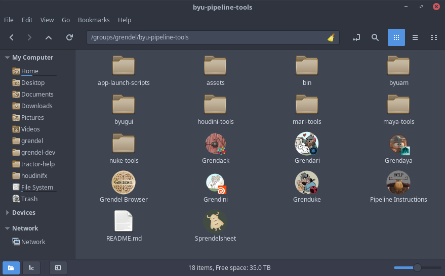To add these icons to your desktop:
- Right click on the icon
- Click 'Make Link'
- Right click on the link that was just created
- Click 'Move to' -> 'Desktop'
Hopefully that is the last time you will have to go into that folder. Should you find yourself interested in what else is there you can learn more in the advanced section.
Important Terms
The pipeline handles three different types of bodies: Assets, Tools, and Shots.
-
Assets are either props, accessories, sets, or characters. Assets are composed of various elements: models, rigs, textures, designs, materials, and assemblies.
A common misconception is that an asset is the same as a model, however the appropriate relationship (at least as the pipeline tools see it) is to say that an asset has a model, it is a subtle difference and you will likely hear people (even those that are very familiar with the difference) slip up with it all the time. So just keep in mind as you read through this documentation and talk to others that an asset could potentially refer to:
- something useful or valuable
- short for Houdini Digital Asset
- a model
- Often it is used in place of body, maybe because the asset is the most common type of body. Or perhaps because "creating a body" sounds stranger than "creating an asset."
- Tools refer to the Houdini digital assets (HDAs) that have been developed specifically for the film. HDAs can be created to assist in various things while working in Houdini and saving them in the pipeline will allow everybody to have access to these tools. Tools are only composed of one sub element: HDAs.
- Shots are...well shots I guess. The elements that make a shot are animations, character effects, compositions, effects, layouts, lighting, and renders.
To better understand how the pipeline works you first should understand the life of these bodies. And to understand the life of a body you need to understand these terms:
*Note: For the sake of clarity we will discuss these terms looking at the specific case of the model element of an asset body. But everything should also apply to other elements and other bodies as well.
Body Creation
In order to do anything you need to create a new asset. Assets are usually the first bodies to be created and then shots will be made from assets. Tools will be made as you need them; if you never need them then you will never make them. When you create an asset you will give it a name and the pipeline tools will construct a bunch of folders to store the various elements of the body. For example it will create a model folder that will store the Maya file and the alembic exports for that model. This folder starts out empty but we can fill it by creating the model in Maya and then publishing it to the pipeline.
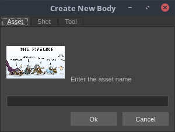If you are creating an asset there are four different types of asset that it could be: Set, Prop, Character, and Accessory. When you create an asset it the body creation tool will ask you which type of asset it is.
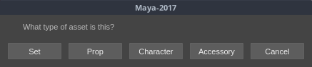It is important that you select the appropriate type at this point because the pipeline will treat the different types very differently. Here are the differences:
- Set: Places in the film. These will be made up of props and accessories.
- Characters: A person or creature in the film.
- Props: Objects that are used by character. These objects will likely be animated.
- Accessories: Objects that just sit in the set. These objects will likely not be animated.
Publishing
First up is to make a part of the assets: the model. Once you have created the model you will need to save it into the pipeline. This is called publishing. When an asset is published, the pipeline tools will make a copy of your file and save it into the pipeline. In the case of the model, the pipeline will take your Maya file and make a copy of it to store in the model folder. Once you have published an asset it will be available for anyone to see and use. The way to access a file that someone else has published is through checking out the assets.
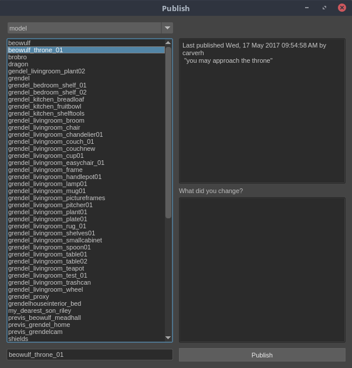When you publish an asset make sure that you leave a good comment about the changes that you made. This makes it easy to track important changes on the asset and will become crucial if ever you need to rollback (discussed later).
Checkout
To use an asset you need to check it out. Checking out is the opposite of publishing. When you check out an asset the pipeline tools will create a copy of the production asset and save it to your personal files so that you can work on it. You can make whatever changes you need to it and when you are done you publish the asset again so that everyone can have access to your changes.
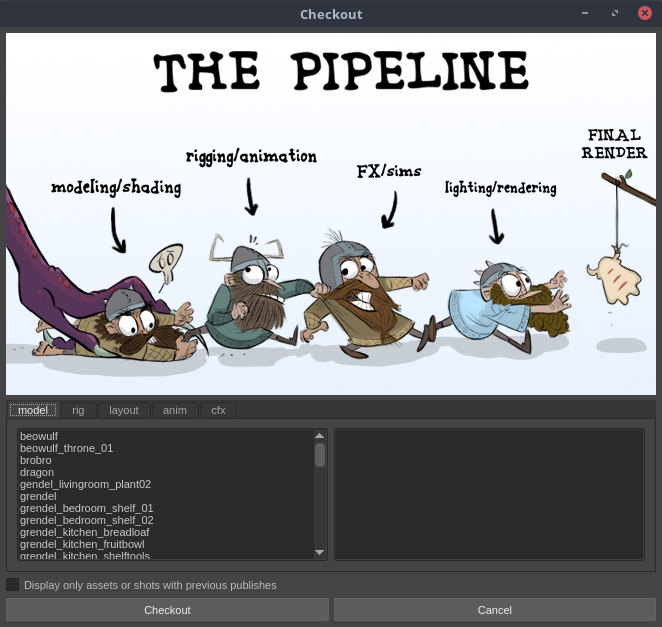Since the pipeline tools make a personal copy of the file for you, you can modify and save changes as you wish without worrying about changing the production version until you are ready to publish.
Multiple people can check out the same asset and work on it at the same time. This is nice because it means that multiple people can look at, do tests on, or work on the the same file. However you need to watch out! Imagine a case where two people, Austin and Kalee, both are working on the model for Grendel. Austin is hard at work modeling Grendel's arms; it has taken him hours. Kalee has checked out Grendel's model as well to check on it's progress. Since Austin hasn't published his changes yet Kalee has an old version. She notices that Grendel's eyes are backwards and in a couple of seconds she fixes them. Austin finishes his changes and publish. Moments later Kalee publishes her changes, but her version doesn't include Austin's changes. There is no way to merge the changes, so the pipeline will use the model that was published most recently, in this case Kalee's version that has the eyes the right way but has the wrong arms. So make sure that you are communicating will all the people that are working on your asset.
Now in the case of Austin and Kalee it is likely that they would actually want to use Austin's version and just apply Kalee's quick changes to it. Thankfully there is a way to revert a production model to a previous version, rollback!
Rollback
When you publish an asset the pipeline will keep track of the history of that item. So at anytime if you need to revert to a previous version of the asset you can rollback the changes.
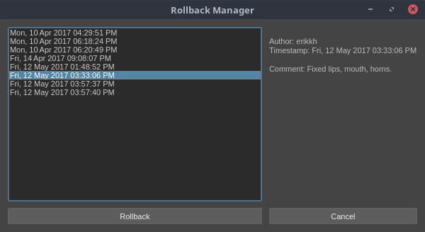In the case of Kalee and Austin (discussed in the Checkout section), we see that Austin needs to restore his version. He would scroll through the revision history and find his version. If he doesn't remember the exact time of his publish he can look in the comment section for the descriptive comment that he wrote when he published it. Then he can rollback to his version, re-do Kalee's changes and republish.
Naming Conventions
You will find that there are a lot of names that end in "_main" and folders that are called "main." Why is this? The idea is that at some point you might want to have different variations of the same asset. For example in Taijitu we had the regular or main Ten and then we also had Dream Ten that had the same model and rig but had a different shader. So the idea is that you would have ten_texture_main and ten_texture_dream and those textures would be stored in /groups/dusk/production/assets/ten/texture/main/ten-skin.tex and /groups/dusk/production/assets/ten/texture/dream/ten-skin.tex. At the time of writing this there is no software that leverages this file structure of naming convention, at least not to my knowledge. In the future we might so we will just leave the folder structure and naming convention in the hope that one day we might support that.
The Life of a Pipeline Asset
Now let's see these in context of the life of an asset:
-
Story artists take the story concept and draw each acting moment and scene in the film.
At the time of writing this document there is no place for the storyboards in these pipeline tools. - Assets are created for each prop, set, and character in the film using the create body tool.
- Shots are created for each shot in the film using the create body tool.
-
Vis Dev artists develop the look of objects and characters that are needed to help tell the story told by the story artists.
There is presently no place for vis dev in the pipeline. But if the future the vis dev work could be saved into the pipeline along with all of the other elements of an asset. - Modelers use the concept to create models in Maya and use the publish tool to save the model to the asset.
- Riggers use the model to create all the necessary rigs in Maya and use the publish tool to save the rig to the asset.
- Set dressers will bring all the models from each set together and arrange and size them to fit properly in the set. They will them use the publish tool to save the set to the pipeline as a set.
- Pre vis artists use the rigs and models to create a rough 3D outline of the film. Pre vis artist will layout the basic timing, positions, and camera motion for each shot in Maya and use the publish tool to save the layout to the shot.
- Animators will use the pre vis layouts to inform their animation. They will animate all of the characters and props in Maya and use the publish tool to save the animation to the shot.
- Shaders will create textures for the the asset in Mari and publish the textures to the proper asset.
- Each asset will be assembled in Houdini using the models and textures created earlier and publish it as the assembly part of the asset. Each assembly has the the shader, set placement, and animation built into it.
- Lighters will bring in the all of the assemblies for each shot and add lights to the set to create the appropriate mood for the shot.
- Render Wranglers will brake the assets in the shot into layers and render each shot.
- Compositors will bring the renders from Houdini into Nuke, add composite each shot to make sure that the film has a unified polished look. Then they will publish the composition to the shot
- Editors will bring the composites of each shot together and join it with music and foley to create the final product.
- Critics at the Television Academy will then watch the film, decide it is the best short film that they have ever seen, and award BYU with a Student Emmy for it's wonderful animated film.
It's that easy*.
*Note:Just keep in mind that at almost any point you can go back to a previous point and then move forward again only to jump back to revisit a different point etc.
That is the general overview of the pipeline and what it is doing. Now we will move on to the different tools in the various software.
Maya
For our production, we use Maya for modeling, rigging, pre vis, animation, and character effects. These tools are made to help with those tasks.
To access the pipeline, open up Grendaya and look at the row of tabs at the very top. Click the tool shelf tab on the furthest right labeled "Grendel".
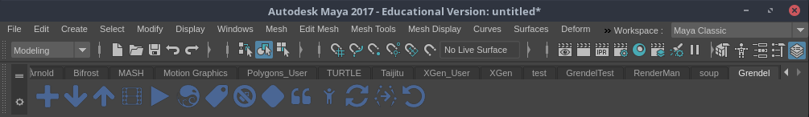Checkout
The checkout button is exactly what it sounds like: you use it to check out, or access, previously worked on scenes or models. When you click it, a window will come up and you will notice that there are 5 tabs: model, rig, layout, anim, and cfx.
If you are a modeler, you'll find the model you want to check out; if you're an animator, you'll find the scene you need to check out; If you're a CFX (character FX) artist you'll need to check out the cfx scene, etc.
In the list of assets or shots select the body you want to work on. Notice the box to the right of the list. This box will give you information about the current state of the body: who was the last person to work on it, when was the last time the body was changed, and what things were changed. If everything looks in order, click "Check Out" and Maya will load the file and you will be able to work on it.
However if you notice that Eric has been working on Beowulf constantly for several days and the last publish was a week ago it may be that Eric is still working on some changes and has not published them yet. Make sure you communicate with those that are working on the same body as you so that you can avoid duplicating work. Our checkout-publish system allows multiple people to check out an asset or shot at the same time so that none of the bodies are locked down. However with this power comes great responsibility! Make sure you are a good communicator!
Another possibility is that you see "No publishes for this element." That means there is nothing for you to check out. First you must model the asset or create a rig or setup the shot locally and then publish it to the pipeline.
Create Body
As discussed in the basic overview section, creating a body will add a new asset, tool, or shot to the project. After the body is created you will then be able to publish and check out it's various parts. When you click this button, a window will come up that has three tabs, "Asset", "Tool" and "Shot". If you are making a new asset, you will name it under the asset tab, and so forth. Following proper naming conventions (that have been established by those in charge of the film), type in the name of the asset or shot and then click "Ok." The body is now added to the project and is ready to receive its first publish!
Publish
The publish button will allow you to upload your model or scene's progress to the pipeline so that others can access it. After checking out a model or scene, you can modify it then publish it back out. Once your asset is published, you should be able to check it out any time you or someone else needs it. Your publishes will replace the previous publishes but it will not overwrite them. This allows you return to a previous version with a rollback (see further down below).
Important: before you publish an asset make sure you are following these conventions:
- Geo is properly named. There should be no "polysurface87" in the Outliner. If each piece of geo doesn't have a descriptive name then it will very hard for shaders to know what textures to assign to which geo later on.
- Make sure that there is as little geo as possible. If the geo is going to use the same texture as another geo in the model you should consider joining them into one mesh. This will make it easier for the shaders to shade and it will make it easier for Houdini to load in and group the asset
- Make sure that all the geo is grouped into one parent group. Beneath that group there can be any number of groups that you want but all of those groups and meshes need to be contained in one group. Otherwise the sets that reference that asset are going to very cluttered and the alembic export my not export your asset correctly.
- Make sure you freeze transformations and delete history.
Set Current Frame Range
Theoretically, this would read into the Asset Browser app thing that we have and make it easier for you to make the correct frame range on any given animated shot. However, we aren't using the Asset Browser anymore, and this button essentially does nothing. So don't click it.
Playblast this Shot
A playblast is essentially making a really low-res, non-shaded render that takes seconds instead of hours. Use this to playback your animation in real time, as playing your animation in the viewport (even in the real-time setting) can be inaccurate.
Export as Alembic
An alembic is essentially an .obj file for animated objects. It will export your animation into a format that other packages like Houdini can read. Uploading an alembic to the pipe is a way to backup your file and keep the animation safe even if your animation file explodes, but keep in mind that uploading alembics constantly will slow down the pipe for everyone if it becomes too full of files. We recommend that you export your alembic to the pipe either when you are finished with your animation or reach a major checkpoint. (You may export your animation as an alembic to your local drive (using Maya's built in exporter) as often as you want though.)
Tag Selected Objects for Export
There are a lot of parts of a character that should not be included in an alembic. For example, the rig controls for a character should be left out and only the deformed mesh should be included in the export, or simulation meshes for cloth should not be included but the high res hero cloth that deforms to that simulation mesh should be included. Use the tag tool to mark the geometry that needs to be exported and then when the Export as Alembic tool is run it will only export the tagged geo. You should only ever need to tag an item once. Therefore you should tag it as early in the process as possible. For a model you could tag it when you are rigging it. Tag the geo and then any time the rig is referenced it will still have those tags.
Untag Selected Objects for Export
If you tag something that should not be tagged or for any other reason you need to untag something then you can untag it with this tool. Since objects are untagged by default, you should only have to do it to objects that have been tagged previously.
Reference a Model or Rig
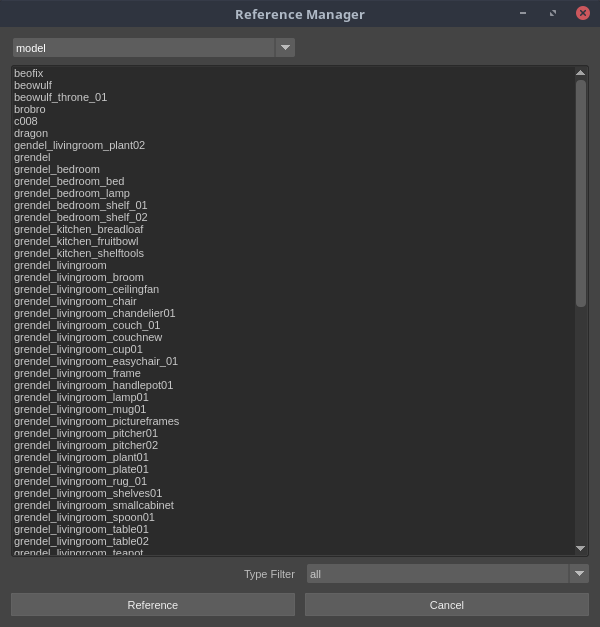A reference is like importing a model or rig into your scene except it pulls from another location and updates as the owner of that file updates it. This is especially important for character rigs as the riggers will continue to polish deformations and your referenced rig will update with those changes. You will need to re-reference your rig(s) every time a change is made to the rig in order to see it in your animation; this will not affect your keyframes. Other notes: You cannot modify a model or rig when it is referenced. Referenced rigs are generally faster and less expensive to run than the real rig itself.
Inspirational Quote of the Day (AKA the Brent Button)
Click to be inspired by your favorite faculty's inspirational quotes. Also submit more quotes to the tool_suggestions channel on Slack.
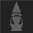 Gnomic Test Geo (AKA Summon the Garden Gnome button)
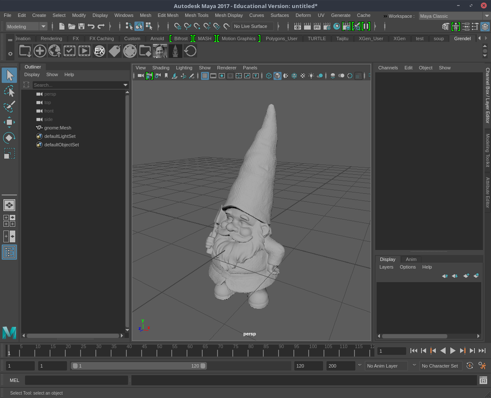Need to blow something up or set it on fire? Have we got the gnome for you! This is kind of like Myth Buster's "Buster" test dummy except a garden gnome and also virtual. Have fun, go play with scissors and fire on us.
 Export as Static Alembic
Export as Static Alembic
Normally a static version of each asset is exported to an alembic when you publish. Should you ever meet a case where you need to re-export the static alembic for an asset but you haven't made any changes that need to be published (sometimes, though rarely, the Houdini tools may prompt you to do so) then you can just checkout the asset and press this button to create the static alembic export.
 IK FK Snapping
IK FK Snapping
The IK FK Snapping Tool allows you to match an IK limb of a rig to the corresponding FK limb. When you click on the tools you will see a small window that will allow you to select the character, limb, and side to snap. Then you click on the mode you want switch to.
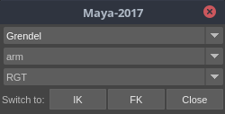 Reload Tools Scripts
If you have made changes to the code that runs any of these buttons then you can use the Reload Tools Scripts tool to reload the scripts without having to restart maya. You can find more information about this in the Advanced section.
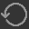 Rollback Body to Previous Version
Occasionally, you might publish a scene or model that for some reason you wish you didn't because the last version was better. Or maybe the current published version has crashed and there's no saving it, so the best bet is to go back in time and reverse the damage.
That's what rollback is for! Rollback will take you back to a previous version. To use it, click the element you want to rollback to and click the date of the version you want.
To rollback an element first check it out. Then click the rollback button. A window will come up that will list all of the previous publishes for that element. Click on the publish that you want to go back to and click "Rollback." Maya will essentially recall the file from that past publish and republish it so it becomes the current publish (*Note: In the list of publishes this publish will now occur twice, once when it was originally published and again when it was rolled back). It will load publish into Maya and you can then start working on it.
Houdini
For our production, we use Houdini for shading, lighting, rendering, and most of the FX.
Do you remember all of those neat things you learned back in the Maya section? Well, throw them out. They only partially relate to the Houdini pipeline tools and having them tightly coupled in your mind will lead to errors.
Let's take a look at Houdini
Go ahead and open the film version of Houdini. Now at this point Houdini probably didn't load in the shelf like Maya did. To get there you will need to add it.
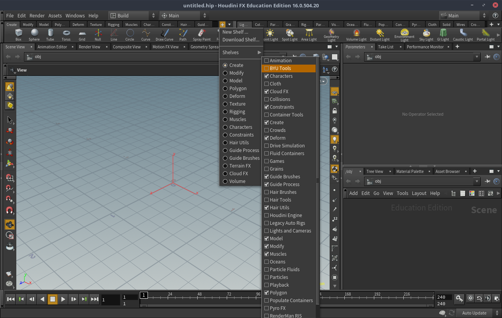Sidenote: Additionally you can find all the tools in the menus. Just incase you prefer that to a shelf button. Also tools will show up in the menu first because they are easier to add to the menu then they are to add to the shelf. So if you are looking for a BYU tool and it's not on the shelf, check the menu.
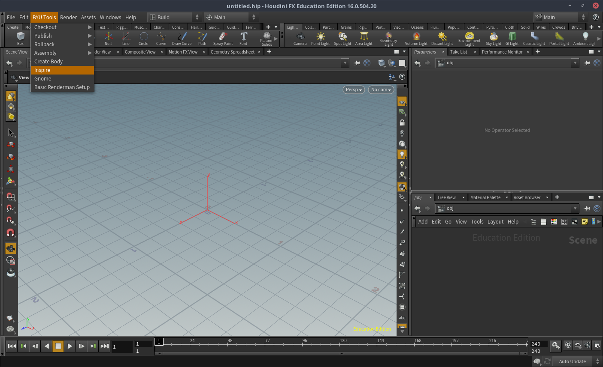With the tools shelf added in, let's take a look at all of the tools.
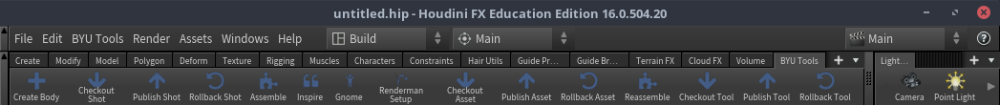Create Body
The create body tool here is actually the exact same as the one in Maya, so about forgetting everything what I mean is don't forget this one.
Assemble Asset
To understand how the checkout and publish buttons are different we first need to understand how the assemble asset tool works.
In Houdini the method of adding geometry to a scene is typically by using the tab menu in the Network View. In order to add our geometry to Houdini we first need to make digital assets for them. Once we have we will be able to simply tab in all of our assets into Houdini. The assemble asset tool creates the digital assets for you.
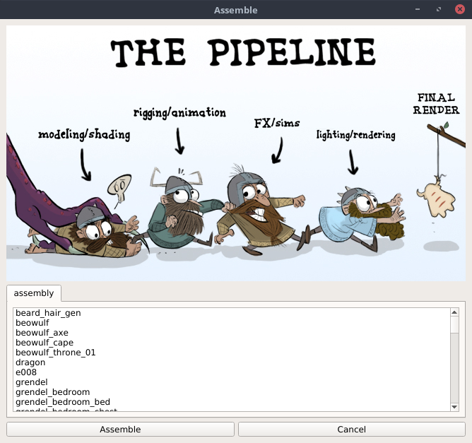Find the asset that you want to turn into a digital asset and then click "Assemble." This will load in the alembic that Maya exported when you published it, and turn it into a digital asset. Once the digital asset is created you can add the shaders for the various objects into the digital asset. Once you are pleased with your work, select the digital asset, and then click publish. Now the digital asset is ready for anybody to tab into their scene.
Important: Once the asset is assembled you no longer need to assemble it. You can just tab it in. If you click assemble asset again it will completely rebuild the digital asset, bringing in the alembics from Maya again but it won't bring in any of the shaders that you created. If someone else has already assembled the asset you will receive a message warning you that the asset has already been assembled. You can assemble it again if you want but you will wipe out any changes that may have been there. If you don't need to assemble it again then you can tab it into the network view without assembling it again.
If for some reason you do need to reassemble the asset you may find that the reassemble tool will do the trick for you without loosing the shader information.
Overview
- Click assemble asset
- Click on the asset you wish to assemble
- Click "Check Out", which should lead you to here: 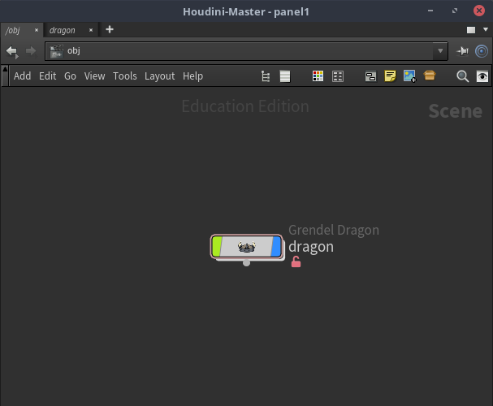
-
Add shaders and perform whatever other edits (More details below)
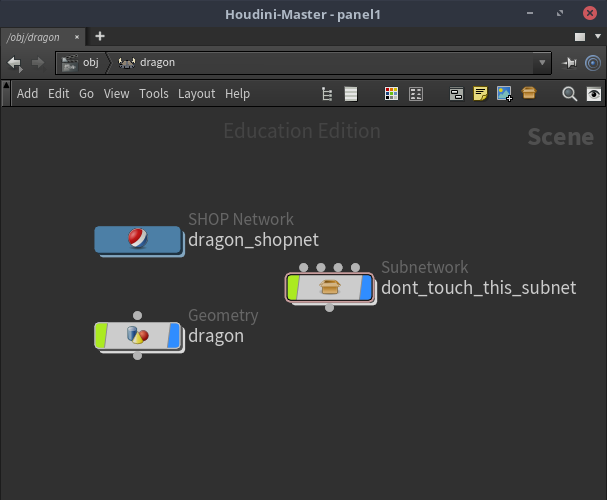
Here you will notice that there is a subnet called "dont_touch_this_subnet." At the time of creating this tool there was an issue with adding displacement to groups for RenderMan for Houdini. The only thing we could come up with was to break the groups into their own geo nodes and store them into this subnet. However we were able to make the interface the same as if we didn't have to do this work around. So you shouldn't have to touch this subnet at all. If you find yourself tempted to put stuff in it or to edit any of it's parameters you should really consider if there is a different way you can accomplish what you are trying to do.
- Select the digital asset in the network view
- Click publish
If you need to make changes to the asset the instructions are a little different:
- Tab in the asset
- Select it in the network view
- Make the necessary changes
- Select the digital asset in the network view
- Click publish
Building Shaders
Each asset will have it's own shopnet and you should create the shader for each asset within it's own shader so that whoever checks it out can have the shaders with it.
Each texture that is exported from Mari using the Tex export will be found here: "/groups/grendel/production/assets/ASSET_NAME/texture/main/cache/TEXTRUE_NAME.tex."
When you assign the filename of the texture to the shader make sure that the path uses $JOB. When using Grendini $JOB refers to "/groups/grendel" so the path from above would become "$JOB/production/assets/ASSET_NAME/texture/main/cache/TEXTRUE_NAME.tex."
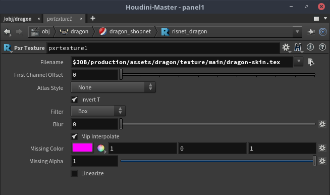Asset Parameters
Once the asset has been assembled and all of the shaders have been created you can assign them to the geometry. In the geo node (Img 1) you will find all the parameters for setting up the shaders. The Material tab (Img 2) will have a set of parameters for each geometry group in the alembic. These groups are based off of the pieces of geometry in Maya. If you have 1000 geos in the outliner you will also have 1000 groups that you are going to have to deal with here. Make sure that the geo is clean and organized in Maya so that it is easy to deal with in Houdini. For each group you can assign the material, the displacement, and the displacement bound.
Important:When you are working on the shaders make sure that the paths to the shaders are relative paths. One way this can be achieved is in the operator selector (Img 7) make sure you have "Export Relative Path" checked before you click accept.
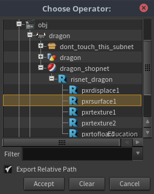Img 1
The RenderMan tab (Img 3) in the geo parameters will have several RenderMan settings such as "Render Polygons as Subdivisions" and "Interpolate Boundary." If there are other RenderMan parameters that would be good to include here let us know and we can add it.
If the geometry hasn't loaded you can try going to the Troubleshooting tab (Img 4) and click the "Refresh" button. This will try and reload the geometry from the alembic. If it still doesn't work feel free to poke around any of the nodes and see if you can find the problem. If all else fails just find a Pipeline technician to help fix the problem.
Img 2
Img 3
Img 4
Img 5
There are also some new parameters on the digital asset (Img 5). In the Grendel tab (Img 6-8) there are options for loading different versions of the asset. These versions can be selected from the "Source Menu" in the Grendel Tab.
First, the Object Space (Img 6) option will load the geometry as it was modeled in Maya.
The Set Space option (Img 7) allows you to select a set in the film and if this asset appears in that set if will load the translation, rotation, and scale of this asset so it will fit into that set. The set can be selected from the set menu that will appear if the source is set to "Set."
The Shot Space option (Img 8) will load in any shot specific animation for this asset. If in the shot the asset remains static then you can leave the source set to Set Space. However if the asset moves then you can select the shot and the tool will load in the dynamic alembic for that specific shot.
Additionally there is a hide toggle that will allow you to hide or show the asset and a "Reload" button that is just the "Refresh" button from above that has been promoted up to the HDA level for your convenience.
Img 6
Img 7
Img 8
Img 9
Assembling a Set
Since a set is a bunch of assets put together the assembly process for a set is a little different. Instead of loading in alembics directly from the set in Maya the assembler will instead load in all of the HDAs for all of the assets that are in that set. It will then promote many of the options discussed above to a parent HDA that represents the set.
Img 1
Img 2
Img 3
Sets also have a different set of parameters. In the "Set Options" you will find controls to set set the shot for any animation that takes place on the items in that set. You will also find two checkboxes for each item in the set: "Hide" and "Animated". If the Hide box is checked the asset in the set will be hid. If the Animated box is checked then instead of using the typical static geo for the set the animated alembic will be used for the shot specified in the shot folder.
All of the shaders should be hooked up on each of the assets in the set so once it is assembled you shouldn't have to do much to it. However you might find it useful to organize the assets in the set into several tabs (as seen in image 3) so that it is easier to find them.
Additionally if any of the assets in the set have any custom controls you may want to promote them to the set HDA so you can access those controls without needing to unlock the set HDA.
Reassembling an Asset
There may be times when you will need to reassemble an asset. This might be because the parameter interface for the assets has changed and it needs to be updated. Or maybe the names of groups and geo changed so much that they don't show up anymore. If the changes are small enough it might be easier to do them by hand. But if the changes are very extensive then the reassemble tool might be the tool for you!
WARNING!: The reassemble tool is going to delete all geo nodes in the HDA. Make sure that anything you want to preserve is stored in a subnet or an HDA tool. Maybe make a copy of it just in case.
Checkout
Checkout is a little tricky in Houdini because there are three different things you can checkout (Assets, Shots, and Tools) and they all get checked out a little differently.
For Assets and Tools you only need to check them out if you are going to edit them. If you only need to use them in the shot then you can just tab them in. If you do need to checkout an asset or a tool you just tab in the HDA for the Asset or Tool, right click on it, and click checkout.
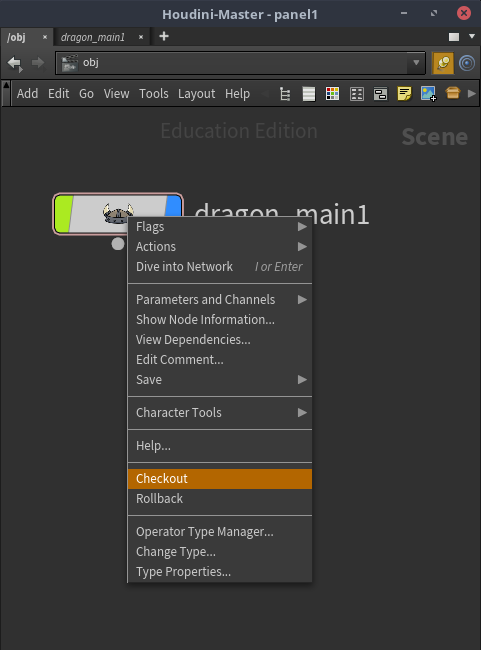It will unlock the node and give you the following confirmation.
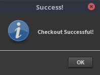For shots you can checkout either a lighting scene or an effects scene. Just use the "Checkout Shot" tool in the tool shelf, select the shot you want to work on from either the lighting or fx tab, and click checkout.
Sidenote: As you were looking in the shelf you probably noticed that there is also a "Checkout Tool" and "Checkout Asset" buttons as well. You can use these if you want but you are going to have to make sure that you select the node that you want to checkout in the network view and then click checkout.
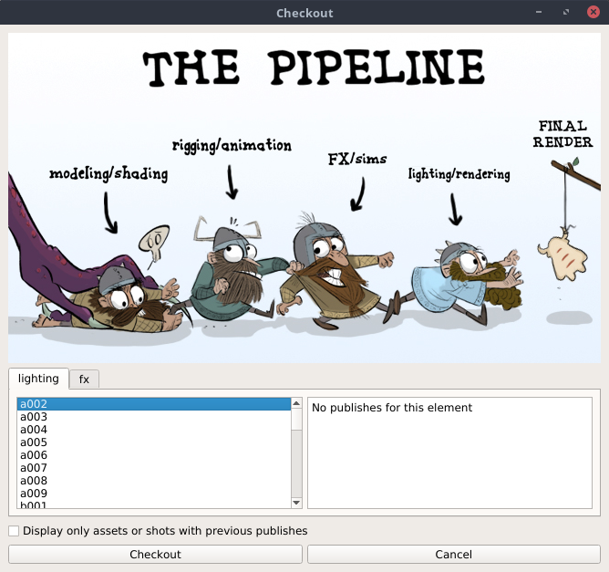Reference
There isn't a reference tool per se but since we are using HDAs you can tab in any asset into Houdini. These act as references that will get updated anytime that the HDA get's updated, But you can also then check out the asset after you have tabbed it in, and then it is no longer a reference but a checked out asset.
Rollback
Rollback works in Houdini similarly to Checkout. If you want to rollback and Tool or Asset just tab it into the network view right click and click Rollback. If you have a shot checked out then you can use the "Rollback Shot" tool to rollback that shot. From there it's the same as any other rollback.
Publish
Publish is like Checkout and Rollback. (*Note: you can only publish an HDA if you first checked it out. In the context menu the option to publish the asset will only show up if you had previously checked out the asset.)
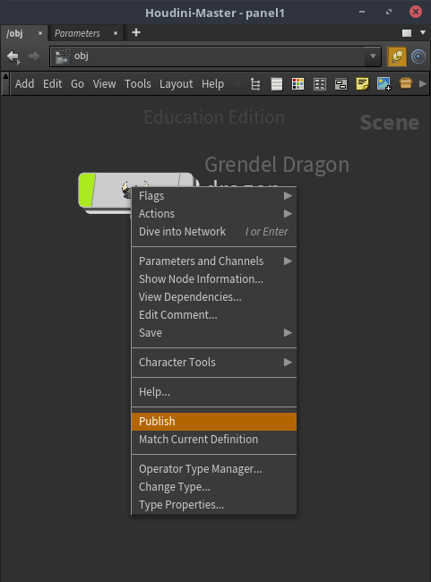When the publish window comes up, make sure the right asset, or shot is selected, write a publish message descripting what you changed, and click publish.
Inspire
See also Maya Inspire tool. It's the exact same.
Gnome
This is essentially the same as the Maya Gnomic Test Geo tool but in Houdini it also will load in the gnome's textures!
Mari
For our production, we use Mari for painting textures. Instead of having a shelf we have a menu. Because it's a little easier to make.
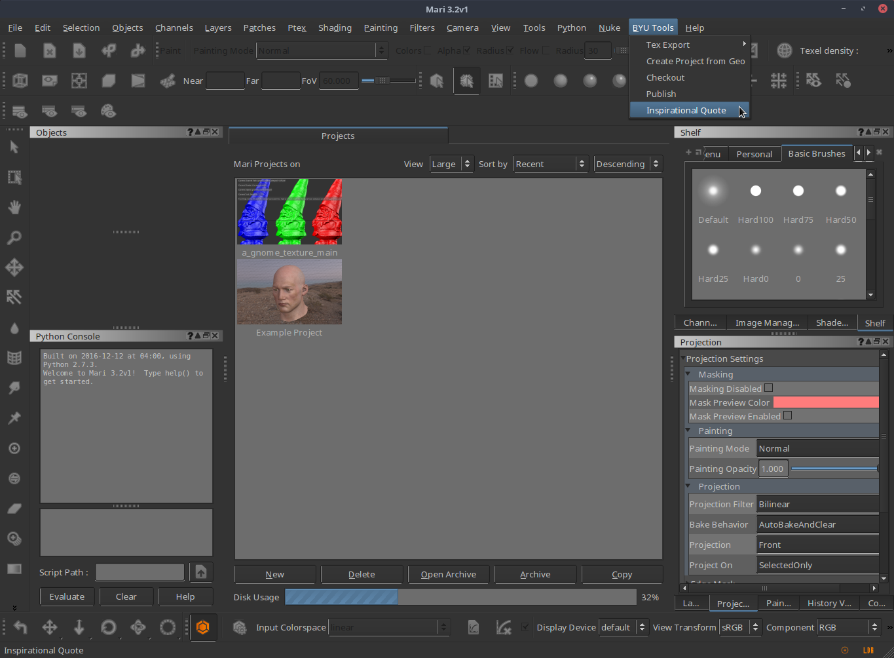Create Project from Geo
First things first is to grab all of the geometry of the asset that you are texturing. Click on Create Project from Geo tool, select the asset you wish to texture, and Click "Assemble." Mari will bring in the alembic file for the geometry associated with that assets.
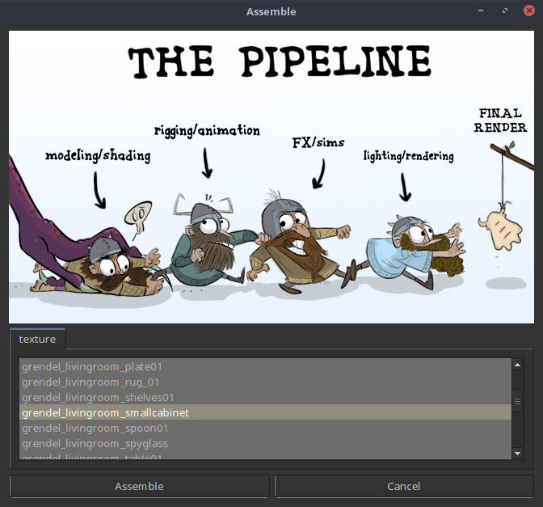The alembic will load into Mari with all of the groups from Maya. This is one of the reasons it's important to make sure that all of the geo is well named, organized, and grouped all under one group.
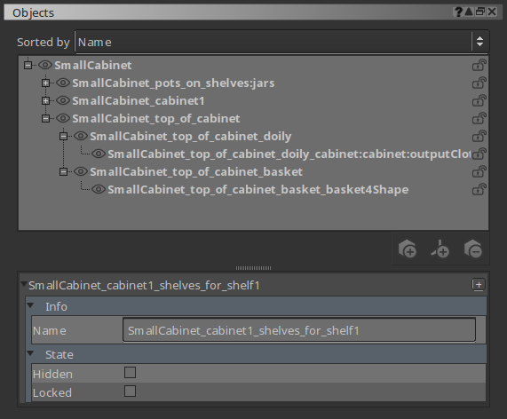Geo heirarcy for the small cabinet. Shelves, jars, etc are all children of the small cabinet.
Checkout
One the surface checkout and publish look the same as they do anywhere else. You pick the the asset you want to checkout and BYU Pipeline Tools will load it into Mari. Then you can publish it and anyone else will be able to open the Mari project and work on it as well.
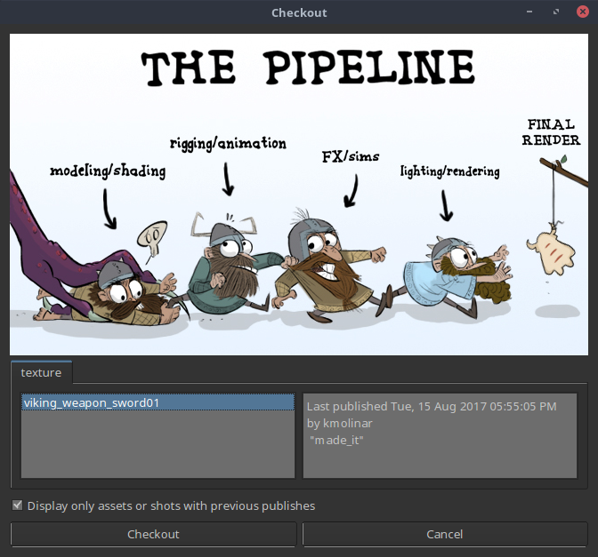Checkout looks the same as every where else, but it acts differently.
However there are a couple of weird things that you need to be aware of. Deep down checkout for Mari is a little different because Mari handles projects a little differently. In order to make sure things are running as fast as possible Mari keeps all of your projects in a cache. In order to get them out of the cache and into the pipeline we need to create an archive of the project, and then that archive can be put into the pipeline. Then when you checkout a Mari file the pipeline tools will load the archive from the prodcution folder and extract it into your projects list where you can easily edit it. Where it gets a little weird is that this project will stick around until you delete it. So if you checkout the file again it pull out the production archive and load it again into your project cache and it will create a second version of the asset.
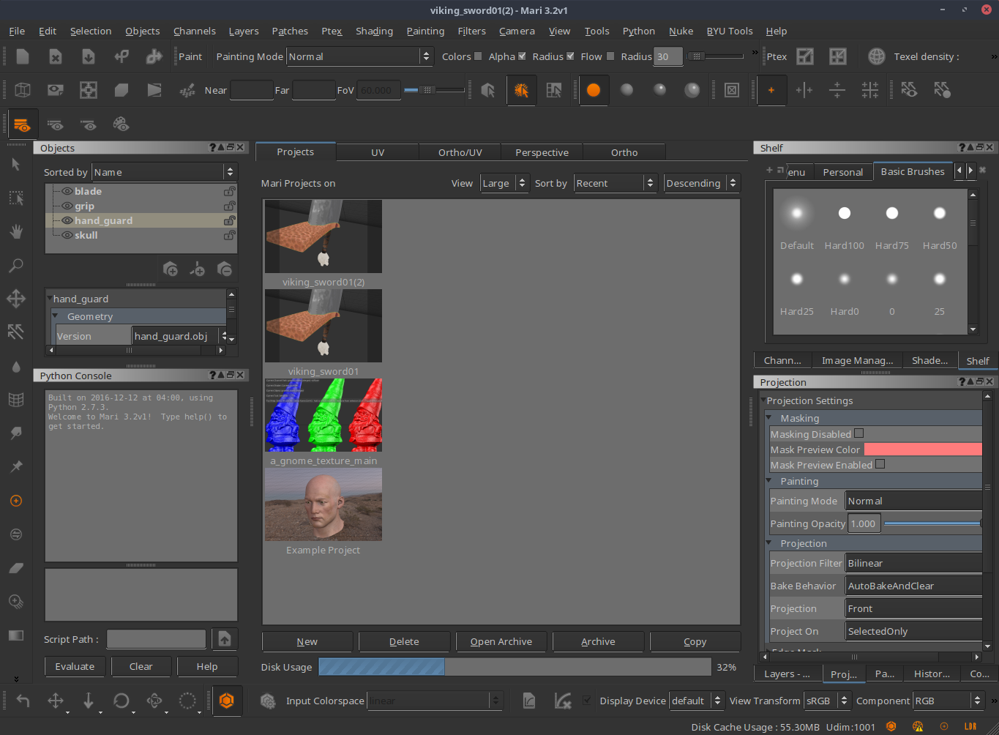Viking_sword_01 has been checked out twice, so in the projects list we have viking_sword01 and viking_sword01(2)
Publish
Publish works the same as usual with the caveat that we discussed in the checkout section. When you publish it will archive your project and save it into the pipe. You are then free to delete it from your projects. In fact the publish tool can do it for you if you want. It will give you the option to delete the project all you have to do is say yes. Or no if you are the paranoid type.
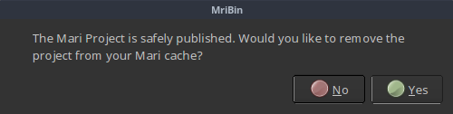Published projects can be removed from your projects
At this point BYU Pipeline Tools will also export all of the textures for that file, and you are good to move on to the next thing.
Export Tex
You don't need to wait until you publish to export your textures. You can export .tex files easily with the Export Tex tool. Select the geo or channel you wish to export textures for and then click the corresponding Export Option (All, Selected Geo, or Selected Channel).
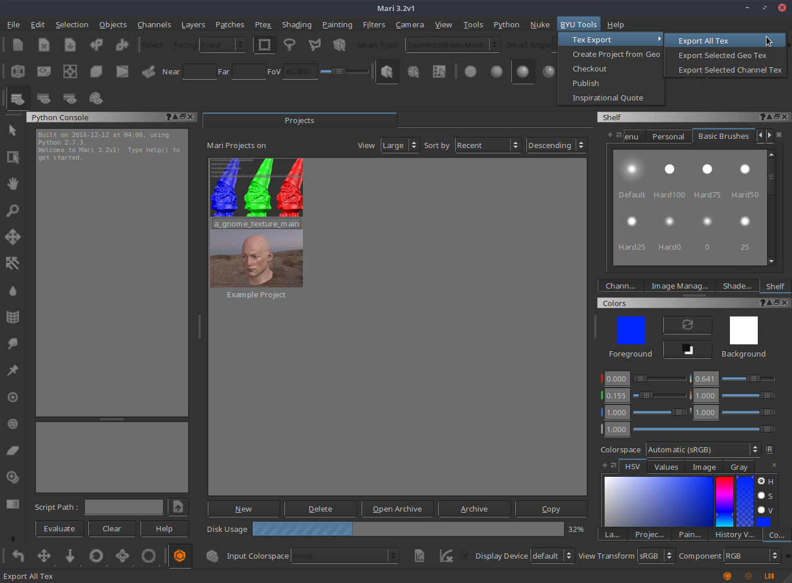If you used the Import Geo tool then Mari will already know where to export the textures to. If you brought the geo in by yourself (because you started working on it before this tool was made) then it will prompt you to select the asset to which the texture belongs. If you need to get to the texture it can be found in /groups/grendel/production/assets/ASSET_NAME/texture/main/cache/.
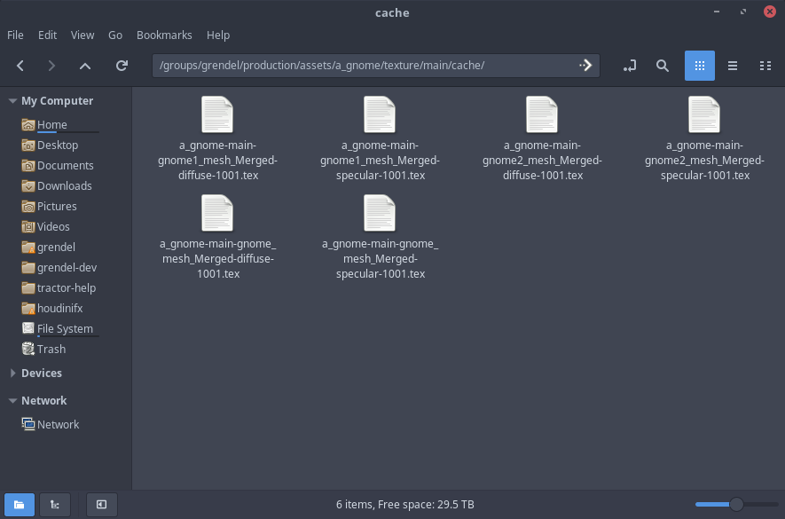In the future we will probably be able to make Houdini bring them in automatically for you but until the future has arrived you are going to have to get those manually. Thank you for your patience!
Inspire
See also Maya Inspire tool. It's the exact same.
Nuke
For our production, we use Nuke for compositing.
The pipeline tools for Nuke are located in the sidebar
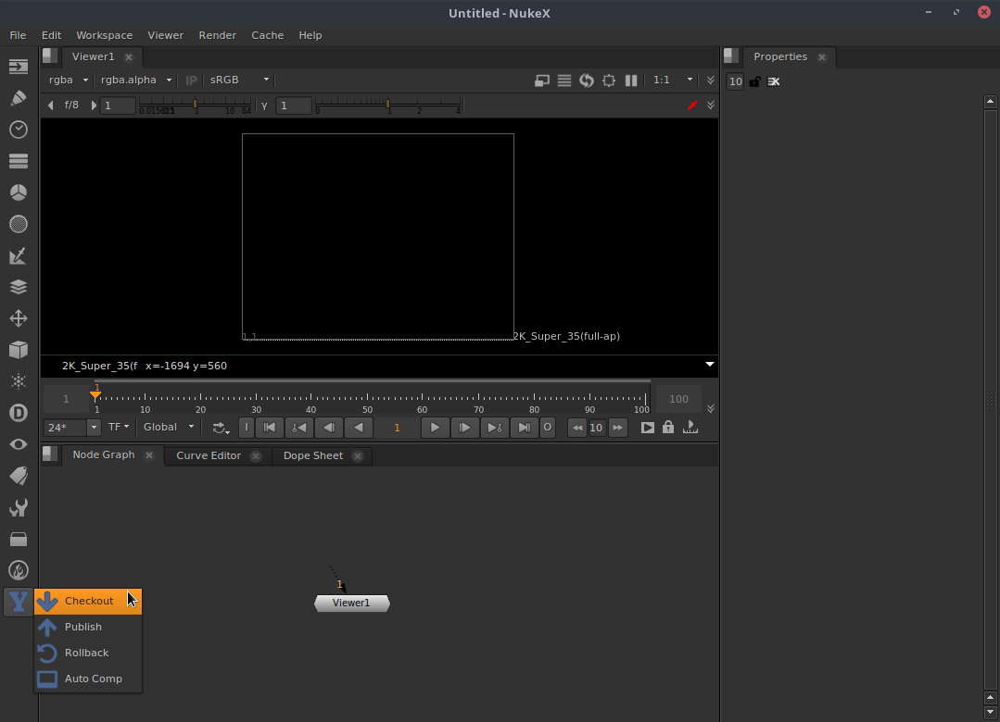Checkout
Nothing weird here! It's just a pretty straight forward checkout process!
Publish
Nothing weird here! It's just a pretty straight forward publish process!
The Future
There are many tools that could be made for Nuke but haven't been made or even dreamed of. If you have a vision for an awesome tool for Nuke, let us know if the tools-suggestions channel on slack!
Slack
For our production, we use Slack for communication.
In Slack you can find important links in the important links channel
Each department has their own channel where you can collaborate on the current projects, show of your progress, and ask questions.
Also check out the blog for more information.
Production Sheet
This Google sheet keeps track of the progress on each asset and shot. It keeps track of who is working on what and helps us see what needs the most work.
Advanced
With any luck at all you won't need this but if you are curious here is some more information about the insides of the pipeline. For even more information look at our git repository or talk to you local pipeline technician.
Switching definitions for Houdini Digital Assets
Have you noticed that for some reason when you tab in an HDA that it isn't the same as when someone else tabs it in? Are you particularly frustrated because it's an asset that you assembled? Houdini may have switched HDA definitions on you! Don't worry it's super easy to fix.
- Tab in the asset in question
- Right click on the asset
-
Select "Type Properties"
A little window with a ton of different options and setting should appear
- Find a drop down menu labeled "Switch definition"
-
Click it to reveal a couple different paths to a couple different definitions of the HDA.
Likely the one that is selected will be something along the lines of "/groups/grendel/users/USERNAME/ASSET_NAME/ASSET_NAME.hdac"
- Select the option that is "groups/grendel/production/assets/ASSET_NAME/assembly/main/ASSET_NAME.hdac" to switch to the production definition of the digital asset
- Click Save
Where Do Files Go When I Check Them Out
When you check out a file the pipeline tools make a copy of the production file for you to work on. This file is yours and you can edit it as you wish without worrying about messing up the production assets.
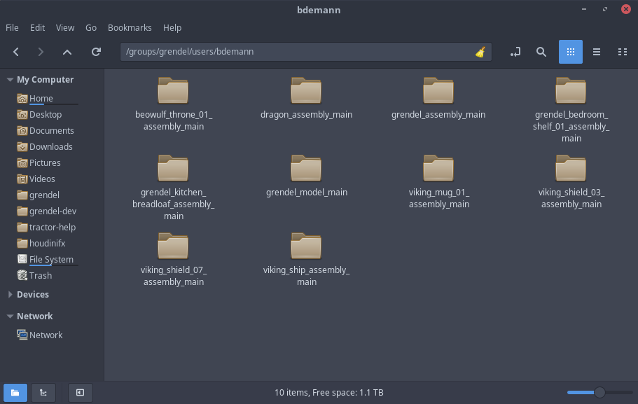Since they are part of the film they can be saved in the groups folder and it won't count against your quota!
Glossary
This glossary contains the definitions of these words as they fit into the the pipeline tools. So even if you know the words if might be good to review how the pipeline thinks about them.
- Accessory: Objects that just sit in the set. These objects will likely not be animated.
- Animation: a shot level element. A Maya file that contains the animation of all the moving objects in a shot.
- Assets: assets are all of the props, accessories, sets, or characters that are in the film.
- Body: bodies are just a shorter way to refer to both assets and shots. A shot is a body but not all bodies are shots; same for assets. You probably won't here about them outside of this documentation.
- Character Effects (CFX): a shot level element. A Maya file that contains all of the character effects, (ie fur/hair, and cloth)
- Characters: A person or creature in the film.
- Composition (comp): a shot level element. A Nuke File that puts together all of the render layers and helps to unify the shots.
- Designs: an asset level element. Any concept art that has been created for an asset. At the time of writing this documentation there is not really a way to bring designs formally into the pipeline so that they are managed by the pipeline tools.
- Effects (FX): a shot level element. A Houdini file that contains all of the effects sims for a shot.
- Element: elements are the building blocks of bodies.
- Element Browser: a piece of software used to keep track of shots and assets. It never really got off the ground and typically we use a Google Sheet to keep track of the progress of all the production bodies.
- Houdini Digital Asset (HDA): also called just digital asset. HDAs are the way that SideFX has created to make custom nodes for Houdini that can be shared by a production team.
- Layouts (Pre Vis): a shot level element. A Maya file that contains the basic poses for a character, the timing of the shot, the location and settings of the camera, the composition and layout of the shot, and how the shot transitions to the next shot.
- Lighting: a shot level element. A Houdini file that contains all of the assets for a shot, has been lighted, and is ready to be rendered.
- Materials: are the shaders that get assigned to the geometry. Typically the materials are built into the assembly instead of being it's own thing. However there still exists the old file structure for materials to be separate elements. Don't get confused about it. They are just going to be empty folders.
- Models: an asset level element. A Maya file that contains all of the geometry for an asset.
- Prop: Objects that are used by character. These objects will likely be animated.
- Renders: a shot level element. EXR files that are rendered images of each frame of the shot.
- Rigs: an asset level element. A Maya file that contains the rig from an asset.
- Sets: Places in the film. These will be made up of props and accessories.
- Shots: shots are all of the animation, cinematography, composition, effects, etc in a continuous film sequence.
- Textures: an asset level element. A Mari file that has all of the painted layers of an asset. It could also refer to the exported tiff or tex files.
- Visual Development (Vis Dev): see also Designs. The process of making designs and developing the look and feel of the film.